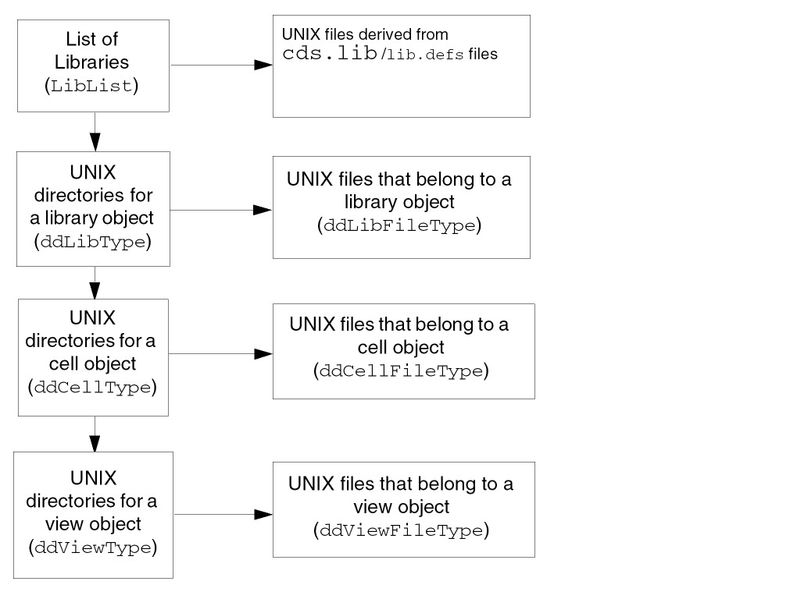

5
CDBA Design Management Functions
CDBA 设计管理函数
The following is required to manage a design:
要管理设计，需要以下内容：
-
Design Data Management System
设计数据管理系统 -
Design Library
设计库 -
Library List
库列表 -
Library List Generator Functions
库列表生成器函数 -
Data Organization
数据组织 -
Object Information Retrieval Functions
对象信息检索函数 -
File Location for Reading and Writing
读写文件位置 -
Synchronization and Access Protection
同步与访问保护 -
File Checkout and Checkin
文件检出与检入
Design Data Management System
设计数据管理系统
The design data management system has the following objectives:
设计数据管理系统的目标包括：
-
Access a design file through logical names
通过逻辑名称访问设计文件 -
Provide version control over design data
对设计数据提供版本控制 -
Define and reassign a new working context
定义并重新分配新的工作上下文 -
Provide hooks for application programs
为应用程序提供钩子（hooks） -
Keep track of design evolutions
跟踪设计演进
Some of the functions that appear to be provided by CDBA system calls are provided by a data management system called the Design Data Procedural Interface (DDPI). The DDPI handles the low-level manipulation of the libraries, cells, and views. The DDPI also presents a common programming interface for calling the cdmcheckin and cdmcheckout programs, which can handle multiple design management systems.
一些看起来像由 CDBA 系统调用提供的功能，实际上由名为 Design Data Procedural Interface（DDPI）的数据管理系统提供。DDPI 负责对库（library）、单元（cell）与视图（view）进行底层操作，并提供统一的编程接口来调用 cdmcheckin 与 cdmcheckout 程序，这些程序可以处理多种设计管理系统。
The procedural interface (PI) is made up of sets of functions. Many of these functions need to handle objects differently, depending on the object's type and location. To facilitate these differing needs, whenever a PI function locates an object, it returns a ddId, which other PI functions can use to identify the type and location of the corresponding object.
过程化接口（PI）由一组函数构成。由于对象的类型与位置不同，许多函数需要以不同方式处理对象。为满足这些差异化需求，每当某个 PI 函数定位到对象时，它会返回一个 ddId，其他 PI 函数可用该 ddId 来识别相应对象的类型与位置。
ddIds are unique within the lifetime of the process in which they are issued and are local to that process. They must not be stored in files or databases and are not valid after the process dies.ddId 在其生成所在进程的生命周期内是唯一的，并且仅对该进程有效。不得将其存储到文件或数据库中，进程结束后 ddId 也不再有效。 This chapter describes the library procedures available under the DDPI. Higher-level tools can be built on top of these procedures.
本章描述 DDPI 下可用的库相关过程（procedures）。你可以在这些过程之上构建更高层的工具。
Design Library
设计库
A design library is a collection of cells, cellviews, and data files under a particular cell and cellview, and of different versions of the data files. It provides a logical view of the design data for the design data management system. The data file locations are transparent to the user. For information about
设计库是某一特定单元及 cellview 下的 cells、cellviews 与数据文件，以及这些数据文件不同版本的集合。它为设计数据管理系统提供设计数据的逻辑视图。数据文件的位置对用户是透明的。有关
A design library is organized into four levels. The following illustration shows these levels, and the types of directories and files they contain.
设计库按四个层级组织。下图展示这些层级以及其中包含的目录和文件类型。

Startup File Locator
启动文件定位器
The following function returns the path to the startup file (such as the cds.lib file) you specify. The contextId should be NULL for ITKDB users.
以下函数返回你指定的启动文件（例如 cds.lib 文件）的路径。对于 ITKDB 用户，contextId 应为 NULL。
String
ddGetStartup( String fileName, ddId contextId );
Specify the search path for startup files in the setup.loc file, in either
在 setup.loc 文件中指定启动文件的搜索路径，可以是以下任一位置：
$CDS_SITE/cdssetup/setup.loc
或
your_install_dir/share/cdssetup/setup.loc
Because the path returned is a pointer to a static character buffer, copy this path before you make additional calls to ddGetStartup.
由于返回的路径是指向静态字符缓冲区的指针，在你对 ddGetStartup 进行其他调用之前，请先复制该路径。
Library List
库列表
Tools locate the files they need to access by looking in several standard places. Most tools have data search-path functions that enable users to look at a list of places. A library list indicates the search paths for files.
工具通过在若干标准位置中查找来定位它们需要访问的文件。大多数工具都提供数据搜索路径函数，使用户能够查看这些位置的列表。库列表用于指示文件的搜索路径。
Functions to Generate the Library List
生成库列表的函数
The DDPI supplies the functions ddStartGenLibList, ddGenLibList, and ddStopGen to generate and examine the library list.
DDPI 提供 ddStartGenLibList、ddGenLibList 和 ddStopGen 函数用于生成并检查库列表。
Function to Identify a 5x Library
识别 5X 库的函数
The DDPI supplies the function ddLibIs5X to determine whether the library was created as a 5X library.
DDPI 提供函数 ddLibIs5X 用于确定该库是否作为 5X 库创建。
cds.lib and lib.defs Files
cds.lib 与 lib.defs 文件
For information about lib.defs keyword and syntax, DDPI and library manager support for lib.defs and cds.lib files, see
有关 lib.defs 的关键字与语法、DDPI 与 Library Manager 对 lib.defs 与 cds.lib 文件的支持信息，请参阅《Cadence Application Infrastructure User Guide》第 5 章中的
Currently, ITKDB does not allow its users to dynamically edit the cds.lib or lib.defs when running their ITKDB-based tools. Also, it does not allow its users to use the chdir function in their code.
目前，ITKDB 不允许用户在运行其基于 ITKDB 的工具时动态编辑 cds.lib 或 lib.defs；同时也不允许用户在代码中使用 chdir 函数。
Library List Generator Functions
库列表生成器函数
You can use a library list generator to obtain the list of libraries in virtual memory (VM). The following generator functions work together to find the libraries in a library list.
你可以使用库列表生成器获取虚拟内存（VM）中的库列表。以下生成器函数配合使用，用于在库列表中查找库。
ddStartGenLibListLib
ddLibListGenState *
ddStartGenLibListLib( );
Initializes a library list (LibList) library generator.
初始化库列表（LibList）的库生成器。
ddGenLibListLib
ddId
ddGenLibListLib( ddLibListGenState *pState );
Finds the next library in the library list given a library list generator. Returns NULL when it finishes.
给定库列表生成器，在库列表中查找下一个库。完成时返回 NULL。
ddStopGen
void
ddStopGen( voidstar a );
Releases the space occupied by the generator pointed to by the parameter a. Function to identify a 5X library
释放参数 a 所指向的生成器占用的空间。识别 5X 库的函数。
Function to Identify a 5X Library
识别 5X 库的函数
The following function determines whether a library is a 5X compatible library.
以下函数用于确定某个库是否为 5X 兼容库。
ddLibIs5X
Boolean
ddLibIs5X( ddId libId );
OpenAccess supports different types of design management systems using plug-ins. DFII on OpenAccess supports only the FileSys plug-in which provides backwards compatibility with the 5X library structure. This function determines whether a library was created with the 5X library structure.
OpenAccess 通过插件（plug-ins）支持不同类型的设计管理系统。基于 OpenAccess 的 DFII 仅支持 FileSys 插件，该插件提供与 5X 库结构的向后兼容性。该函数用于确定某个库是否以 5X 库结构创建。
Returns TRUE if the library was created as a 5X library. Returns False otherwise.
如果该库作为 5X 库创建则返回 TRUE，否则返回 False。
Data Organization
数据组织
Many tools have the following model for organizing data:
许多工具使用以下模型来组织数据：
-
A library contains collections of module-specific data called cells.
一个库（library）包含称为 cells 的模块相关数据集合。 -
Cells contain design-specific collections of data called views.
Cells 包含称为 views 的设计相关数据集合。 -
Views contain files (cellviews).
Views 包含文件（cellviews）。
The following table shows the design data (DD) ID types of the objects that correspond to the libraries, cells, views, and the files contained in them.
下表展示与库、cell、view 以及其所包含文件对应的设计数据（DD）对象的 ID 类型。
|
Object 对象 |
DD ID type DD ID 类型 |
|---|---|
Object Information Retrieval Functions
对象信息检索函数
The following functions retrieve information about objects.
以下函数用于检索对象相关的信息。
ddIsId
Boolean
ddIsId( ddId id );
Returns TRUE if the parameter id is a 32-bit opaque ID known to the PI, and returns FALSE otherwise.
如果参数 id 是 PI 已知的 32 位不透明（opaque）ID，则返回 TRUE；否则返回 FALSE。
ddGetObjName
String
ddGetObjName( ddId obj );
Returns the name of the object.
返回对象的名称。
ddDeleteObj
Boolean
ddDeleteObj( ddId obj );
Deletes the object and removes it from use. Depending on the design management integration, the object may simply be removed from the next release of the project yet remain in the repository, or the object may be completely removed along with its history.
删除该对象并使其不再可用。根据设计管理集成方式的不同，对象可能只是从项目的下一次发布（release）中移除但仍保留在仓库（repository）中；也可能会连同其历史一起被彻底移除。
If the underlying design management system is designSync, the design manager removes the object from the next release of the project, but the object remains in the repository. However, if the underlying design management system is versionSync, the design manager deletes the object from the repository, as both the file and its entire history are removed.
如果底层设计管理系统是 designSync，设计管理器会将对象从项目的下一次发布中移除，但对象仍保留在仓库中。相反，如果底层设计管理系统是 versionSync，设计管理器会从仓库中删除该对象，因为文件及其全部历史都会被移除。
If you delete a directory object, ddDeleteObj tries to get an exclusive lock, in non-blocking mode, on every data file in the hierarchy under that directory. If it fails to get any lock, it detects that another process is using that file. It therefore cannot delete the object, and it returns FALSE without deleting anything.
如果你删除的是目录对象，ddDeleteObj 会以非阻塞模式尝试对该目录层次结构下的每个数据文件获取独占锁（exclusive lock）。如果任何一个锁获取失败，则表示其他进程正在使用该文件，因此无法删除该对象，并会在不删除任何内容的情况下返回 FALSE。
If obj is a library, this function deletes the library directory from the disk and removes the library entry from the cds.lib file. If the library has been defined in more than one cds.lib, ddDeleteObj does not delete the library from the disk; instead, it adds an UNDEFINE statement for the library to the appropriate cds.lib file.
如果 obj 是库（library），该函数会从磁盘删除库目录，并从 cds.lib 文件中移除该库条目。如果该库在多个 cds.lib 中被定义，ddDeleteObj 不会从磁盘删除该库；而是向相应的 cds.lib 文件添加该库的 UNDEFINE 语句。
If obj is of any other type, ddDeleteObj removes the object from disk from the master directory.
如果 obj 是其他类型，ddDeleteObj 会从 master 目录中将该对象从磁盘移除。
ddGetObj
ddId
ddGetObj( String libName, String cellName, String viewName, String fileName, ddId contextId, String mode );
Description
描述
Finds libraries, cells, views, and files, and creates cells, views, and files. The simplest usage is to find a library by name:
查找库、cell、view 与文件，并创建 cell、view 与文件。最简单的用法是按名称查找一个库：
library = ddGetObj("libName", NULL, NULL, NULL, NULL, "r")
dbOpenCellViewByType. Do not use ddGetObj. The dbOpenCellViewByType function calls ddGetObj for you.如果你想访问的文件是 cellview，请使用
dbOpenCellViewByType，不要使用 ddGetObj。dbOpenCellViewByType 会替你调用 ddGetObj。
DDPI uses the following concepts to define the behavior of ddGetObj:
DDPI 使用以下概念来定义 ddGetObj 的行为：
-
A master file is a file that the writing application looks to for source data or data that cannot be recreated without user input. There can be only one master file per view. The master file might be identified by the file belonging to the view named
master.tagcontaining the name of the master file.
master file 是写入应用程序用于获取源数据、或获取无法在没有用户输入时重新生成的数据的文件。每个 view 只能有一个 master file。master file 可通过名为master.tag的 view 所属文件来标识，该文件包含 master file 的名称。 -
A co-master file is a file that the writing application looks to for source data or data that cannot be recreated without user input but is useless without the master. Examples in include an index for the master file; sheets of a multi-sheet schematic, where the index is the master; or separation of graphics and property data into separate files.
co-master file 是写入应用程序用于获取源数据、或获取无法在没有用户输入时重新生成的数据的文件，但它在没有 master 的情况下没有意义。示例包括：master file 的索引；多页原理图的各页（索引作为 master）；或将图形与属性数据拆分到不同文件中。 -
If a file is not a master or a co-master, it is a
derivedfile. Derived files can be recreated from master files, or master and co-master files, in the same view. Only the creating tool can distinguish between masters or co-masters and derived files.
To access a derived file correctly, the tool must specify thecontextIdfor the master. If writing or appending to the file, use thedmodifier in the mode parameter.
如果文件不是 master 或 co-master，则它是derived（派生）文件。派生文件可以在同一 view 中由 master 文件，或由 master 与 co-master 文件重新生成。只有创建该文件的工具才能区分 masters/co-masters 与 derived files。
要正确访问派生文件，工具必须为 master 指定contextId。如果对该文件进行写或追加，请在 mode 参数中使用d修饰符。 -
The
relative namefor a file is specified relative to a library. Files can belong to the library, cell, or view. The name consists of
[/cellName[/viewName]]/fileName
TheddGetObjfunction searches for the object under your specified library in thecds.libfiles until it finds the first occurrence of the “relative named” object. If you requested read access, the function is done and returns anid. It returns an error if the tool does not have read access to that object.
If you request any other access mode,ddGetObjfirst searches for the object as it does in read mode, then returns a value according to whether or not the file exists.
文件的relative name（相对名称）是相对于库指定的。文件可以属于库、cell 或 view。名称形式为：
[/cellName[/viewName]]/fileNameddGetObj会在cds.lib文件中、在你指定的库下搜索对象，直到找到第一个出现的“相对命名（relative named）”对象。如果请求的是读访问，函数完成并返回一个id；如果工具对该对象没有读访问权限，则返回错误。
如果请求的是其他访问模式，ddGetObj会先像读模式那样搜索对象，然后根据文件是否存在返回相应值。
ddGetObj takes string names instead of ddIds as the input for its query because you use it to locate objects when you do not yet have their ddIds. You can supply a context object instead of specifying some of the names. DDPI takes the missing names from the context object for the query.
ddGetObj 以字符串名称而非 ddId 作为查询输入，因为在你尚未获得对象的 ddId 时，通常会用它来定位对象。你可以提供上下文对象以替代某些名称的指定，DDPI 会从上下文对象中补齐查询所需的缺失名称。
Arguments
参数
contextId is specified, the fields with an asterisk (*) do not need to be specified, and the libName must not be specified.如果指定了
contextId，则带星号（*）的字段无需指定，并且不得指定 libName。 ddGetObjLib
ddId
ddGetObjLib( ddId obj );
Finds the ID of the library path object that contains it when given any ddId. If the object is a library, it returns the same ID.
给定任意 ddId 时，返回包含该对象的库路径对象（library path object）的 ID。如果该对象本身是库，则返回相同的 ID。
ddGetObjType
ddType
ddGetObjType( ddId obj );
Returns the ddType of the object when given the ddId of an object.
给定对象的 ddId，返回该对象的 ddType。
ddGetTypeName
String
ddGetTypeName( ddType type );
Returns a string that contains the name of the value, when given an enum of type ddType. This name must be copied before the next call to ddGetTypeName because DDPI allocates it in a static buffer.
当给定 ddType 类型的 enum 值时，返回包含该值名称的字符串。由于 DDPI 在静态缓冲区中分配该字符串，在下一次调用 ddGetTypeName 之前必须先复制该名称。
ddGetMasterSet
ddGetMasterSet(
g_viewId
);
Description
描述
Returns the list of files in the Master Set (if defined) for the given viewId or returns nil. The Master Set is a subset of the Co-Managed Set composed of master data.
返回给定 viewId 的 Master Set（若已定义）中的文件列表；若未定义则返回 nil。Master Set 是 Co-Managed Set 的一个子集，由 master 数据组成。
Arguments
参数
Value Returned
返回值
|
The list of files in the Master Set for the given viewId. |
|
Example
示例
viewId=ddGetObj("mylib" "mycell" "layout" "layout.oa" nil "w")
masterSet=ddGetMasterSet(viewId)
返回
("layout.oa" "master.tag")
ddStartGenObjRel
ddObjRelState*
ddStartGenObjRel( ddId obj, ddObjRelType relType );
Initializes a generator to get the list of
初始化一个生成器，用于获取以下列表：
-
Cells or files belonging to a library
属于某个库的 cells 或文件 -
Views or files belonging to a cell
属于某个 cell 的 views 或文件 -
Files belonging to a view
属于某个 view 的文件
The obj parameter specifies the parent object, and the relType parameter specifies whether you want the list of child objects or of files. Returns NULL if there are no objects with the specified relationship.
obj 参数指定父对象，relType 参数指定你希望得到子对象列表还是文件列表。如果不存在具有指定关系的对象，则返回 NULL。
If an object gets created while the generator is active, it is not made visible until the next call to ddStartGenObjRel. If an object is deleted after the generator is started but before you access the object, you might get an “object does not exist” warning when you access it. The ddStartGenObjRel function does not get you any object locks.
如果在生成器处于活动状态时创建了对象，该对象直到下一次调用 ddStartGenObjRel 才会变为可见。如果在生成器启动后、你访问对象之前对象被删除，那么在访问它时可能会收到“object does not exist（对象不存在）”警告。ddStartGenObjRel 不会为你获取任何对象锁。
ddGenObjRel
ddId
ddGenObjRel( ddObjRelState* pGen );
Returns the next entry in the list of files each time you call ddGenObjRel in the generator state specified by pGen. When the list is exhausted, it returns NULL.
每次在由 pGen 指定的生成器状态下调用 ddGenObjRel，都会返回文件列表中的下一条目。当列表耗尽时返回 NULL。
ddStopGen
void
ddStopGen( voidstar a );
Releases the space occupied by the generator pointed to by the parameter a. This function works with all DDPI generators.
释放参数 a 所指向的生成器占用的空间。该函数适用于所有 DDPI 生成器。
File Location for Reading and Writing
读写文件的位置
The following functions enable a tool to read from or write to files when it needs to.
以下函数使工具在需要时能够对文件进行读取或写入。
ddGetObjReadPath
String
ddGetObjReadPath( ddId obj );
Returns the read path to the object when given the ddId for the obj. Because the path that DDPI returns is not persistent, copy it before making any other dd or db calls.
给定 obj 的 ddId 时，返回该对象的读路径。由于 DDPI 返回的路径不是持久的，在进行任何其他 dd 或 db 调用之前请先复制该路径。
ddGetObjWritePath
String
ddGetObjWritePath( ddId, obj );
Returns the write path to the object when given the ddId for obj. Because the path that DDPI returns is not persistent, copy it before making any other dd or db calls.
给定 obj 的 ddId 时，返回该对象的写路径。由于 DDPI 返回的路径不是持久的，在进行任何其他 dd 或 db 调用之前请先复制该路径。
Synchronization and Access Protection
同步与访问保护
As workbenches become collections of cooperating tools, the need increases for tools to synchronize their access to files. As Cadence® design framework II design manager goes away, DDPI provides similar file-access synchronization services using this procedural interface.
随着工作台（workbenches）演变为协作工具的集合，工具之间对文件访问进行同步的需求也随之增加。随着 Cadence® design framework II 设计管理器逐渐退出，DDPI 通过该过程化接口提供类似的文件访问同步服务。
The following two mechanisms are needed to support cooperative work:
为支持协同工作，需要以下两种机制：
-
Access protection so only appropriate files can be accessed (using UNIX mechanisms)
访问保护：确保只有合适的文件可被访问（使用 UNIX 机制） -
Long transactions based on
checkinandcheckout
Multiple users concurrently employing tools need long transactions supplied by a design management system. Checkin and checkout behavior is optional. The procedural interface does nothing unless the data is managed by a design management system.
基于checkin/checkout的长事务（long transactions）。多用户并发使用工具时，需要由设计管理系统提供长事务。checkin/checkout 行为是可选的；如果数据未由设计管理系统管理，则该过程化接口不会执行任何操作。
File Checkout and Checkin
文件检出与检入
The following functions work together to check files out and back in.
以下函数配合使用，用于检出（checkout）文件并再检入（checkin）。
ddNeedCheckout
Boolean
ddNeedCheckout( ddId file );
Returns TRUE if the file (given a ddId for a file object) is a DM-managed object that needs to be checked out. Returns FALSE if the library is not DM managed or if the file does not need to be checked out.
如果该文件（给定文件对象的 ddId）是需要检出的、由设计管理（DM）系统管理的对象，则返回 TRUE。如果库不是 DM 管理的，或该文件不需要检出，则返回 FALSE。
ddNeedCheckout exists only so tools that need to provide automatic checkout behavior can determine if they need to call the ddCheckout and ddCheckin functions. An example follows:
ddNeedCheckout 的存在仅用于让需要提供自动检出行为的工具判断是否需要调用 ddCheckout 与 ddCheckin 函数。示例如下：
/* Suppose you want to update a file that belongs to a library */
ddId fileId = ddGetObj(NULL, NULL, NULL, fileName, libId, "w");
/* NOTE ddGetObj() only returned the id, it didnot open anything * so it didnot find that the file was not writable. */ if(ddNeedCheckout(fileId)){ /* See if it needs checkout */
ddId fileList[2];
fileList[0] = fileId;
fileList[1] = 0;
void) ddCheckout(fileList,""); /* Check it out */
}
ddCheckout
Boolean
ddCheckout( ddId* files, String switches );
Builds a system command that calls the cdmcheckout command. The cdmcheckout command makes it possible to integrate Cadence tools with Revision Control System (RCS) and other version control applications. The files parameter is a NULL-terminated array of ddIds.
构造一个调用 cdmcheckout 命令的系统命令。cdmcheckout 命令使 Cadence 工具能够与 Revision Control System（RCS）及其他版本控制应用集成。files 参数是一个以 NULL 结尾的 ddId 数组。
The switches allowable are r and v
允许的开关为 r 和 v。
|
Specifies a particular version of a file to be checked out. You must always follow this switch with the version of the file you are checking out. |
ddCheckin
Boolean
ddCheckin( ddId* files, String description, String switches );
Builds a system command that invokes the cdmcheckin command. cdmcheckin makes it possible to integrate Cadence tools with Revision Control System (RCS) and other version control applications. The files parameter is a NULL-terminated array of ddIds. The switches allowable are c and f
构造一个调用 cdmcheckin 命令的系统命令。cdmcheckin 使 Cadence 工具能够与 Revision Control System（RCS）及其他版本控制应用集成。files 参数是一个以 NULL 结尾的 ddId 数组。允许的开关为 c 和 f。
|
Forces the |
Return to top